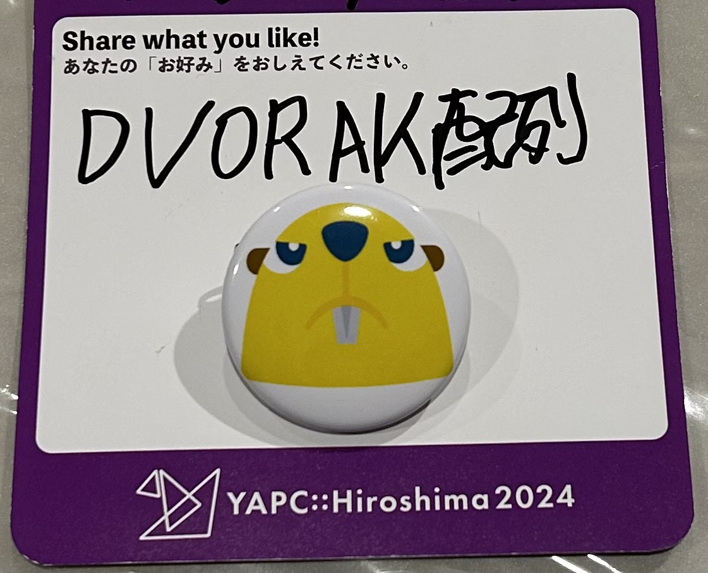
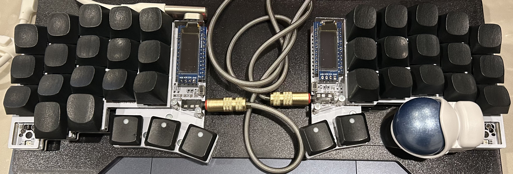

YAPC::Hiroshima 2024 #
2/10 に YAPC::Hiroshima 2024 に参加してきました。
基本的に、無趣味なのですが、キーマップ沼によくハマっています。

YAPC::Hiroshima 2024 前日祭 #
2/9 には、YAPC::Hiroshima 前夜祭 に参加しました。
HonoX #
Hono のリリース。最近、お世話になっているフレームワークです。
Hono v4 is out!
— Hono (@honojs) February 9, 2024
Keep the core small, but go to full-stack. New features:
* Static Site Generation
* Client Components
And… File-based Routing named
HonoX is born!
Enjoy.https://t.co/oVvUh1Rqd9
先ほど発表した「Hono v4」の資料でーす。
— Yusuke Wada (@yusukebe) February 9, 2024
ありがとうございました！#yapcjapan #honojshttps://t.co/Wt5ShVZSHN
YAPC::Hiroshima 2024 当日 #
コミュニティと共に生きる #
明日の登壇資料です。 #yapcjapan
— そーだい@初代ALF (@soudai1025) February 9, 2024
https://t.co/Wxx9MBzIO9
Better late than never.
遅くても、やらないよりはやったほうがいい
まさに、その通りだと思いました。僕自身、パソコンを本格的に触り始めたのは、大学4年生の時です。タッチタイピングなど、夢のような世界でした。それまでは、人差し指でだけでキーボードを打っていたような人間でした。今では、QWERTY配列から移行し、DVORAK配列を使用しています。
手を動かしたものだけが、世界を変える
モチベーションが上がるような登壇内容でした。僕は、サーバーサイドをメインに行っていますが、フロントエンド関連は、苦手なので、少しずつレベルアップをしていきたいと思います。
関数型プログラミングと型システムのメンタルモデル #
伊藤 直也（@naoya_ito）さんのトークがスタートしています！
— yapcjapan (@yapcjapan) February 10, 2024
「(再演) 関数型プログラミングと型システムのメンタルモデル」#yapc_i#yapcjapan pic.twitter.com/cqNrWc0yIW
型に対する捉え方の幅がとても広がりました。ユニオン型を使うことにより、余計な状態を使わなくて済む。不要な状態が少なければ少ないほどの関数の正しさをチェックすることができるなど。
プログラムを書いて楽しむ自作キーボードの世界 #
プログラムを書き、自作キーボードでプログラムを書いていく無限ループ。
本日の LT 「プログラムを書いて楽しむ自作キーボードの世界」 の資料です。ありがとうございました。 #yapcjapanhttps://t.co/ubCRfp88Ry
— takasago (@sago35tk) February 10, 2024
キーボードの半田付けや組み立てができないのですが、組み立て済みの自作キーボードを購入し使用しています。すでに、キーマップ沼にハマっています。沼にハマると、抜け出すのが大変です。
僕の使用キーボード #

こんな、カスタムキーマップや配列などがありますよ！ という方、ぜひ教えてください。
とほほのWWW入門 #
生まれる前のコンピュータについて知ることができました。コンピュータ以外の入門もあり、とても興味深い内容でした。僕が最初に取り組んだプログラミング言語は、Javaでその際とてもお世話になりました。
マジで伝説の人だ…
— Sotaro Karasawa🍺 (@sotarok) February 10, 2024
とほほでHTMLとCSS学びました…
#yapcjapan pic.twitter.com/XuqYoJ9PUA
スポンサーブース #
テレビCMでよく見る、さくらインターネットさんのブースで、話を聞いてきました。
本日はYAPC::Hiroshima 2024にて展示をしています！ さくらのクラウド高火力プランを使った画像生成AIのデモや、ブラウザで無料で使えるさくらのクラウドシェルをお試しいただけます。ご来場お待ちしています！#yapcjapan pic.twitter.com/IO6Kl49DyB
— さくらのコミュニティ (@sakura_users) February 10, 2024
Helpfeelさんで、昨年の「ネコトーストラボ杯争奪 東西対抗 LTマッチ」の、MVP さんと再開しました。
おはようございます！！
— Helpfeel Tech (@Helpfeeltech) February 10, 2024
本日もスポンサーブースで皆様のご来訪をお待ちしております！！
今回、このアカウントフォローでガチャガチャを回していただけます！
可愛い缶バッジが必ず当たる！ ぜひ回しにきてください！！
#yapcjapan pic.twitter.com/GMNxQYYkB1
おわりに #
僕は、対人関係や人が多い場所が苦手ですが、YAPCでは多様性が理解され、誰もが歓迎される雰囲気が心地よく感じられます。去年に続き、2回目の参加です。来年も、参加すると思います。